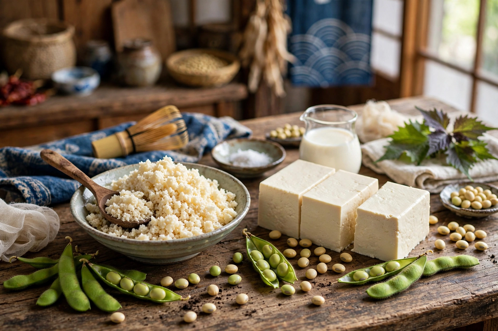

Okara, soy pulp, or tofu dregs is a pulp consisting of insoluble parts of the soybean that remain after pureed soybeans are filtered in the production of soy milk and tofu. It is generally white or yellowish in colour. It is part of the traditional cuisines of Japan, Korea and China, and since the 20th century has also been used in the vegetarian cuisines of Western nations.
| Okara | |
|---|---|
 Fresh okara | |
| Japanese | おから |
| Chinese | 豆渣 (dòuzhā) |
| Korean | 비지 (biji) |
| Main ingredient | Soybean pulp (by-product of soy milk / tofu) |
Okara is low in fat, high in dietary fibre, and contains protein, calcium, iron and riboflavin. Dry okara contains roughly 20–25% protein, 10–15% oil and a large proportion of insoluble fibre. Because of its high moisture content, fresh okara spoils quickly and historically was often diverted to animal feed or compost where tofu production was industrialised.
In Japan, okara is simmered with vegetables and seasonings in the dish unohana (卯の花), named after the deutzia flower for its pale colour. In Korea, biji is used in biji-jjigae, a stew often made with pork and kimchi. In Chinese cooking, soybean dregs may be stir-fried, made into patties, or fermented. In modern vegetarian and health-food cooking, okara is baked into breads, cookies, veggie burgers and granola, and is dried and ground into okara flour.
Okara is widely used as livestock feed, as a soil amendment and fertiliser, and as an ingredient in pet food. Researchers have studied it as a feedstock for tempeh-style fermentation (oncom in Indonesia is traditionally made with okara or peanut press cake) and for producing biodegradable materials.
Large tofu and soy-milk factories generate enormous volumes of okara; because it putrefies rapidly, disposal can be a waste-management problem. Food-upcycling ventures increasingly dry or ferment it promptly to convert a disposal cost into a saleable ingredient.